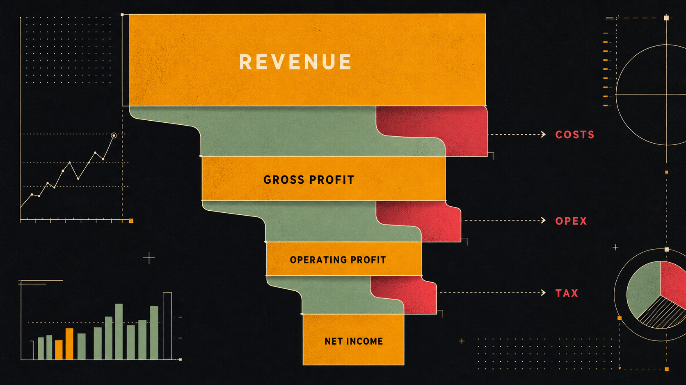
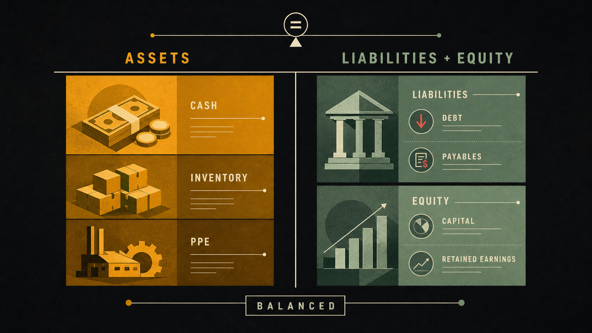
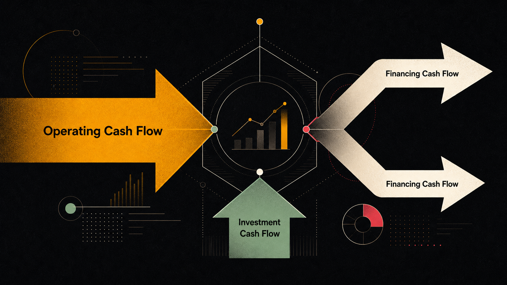

一家公司的净利润连续两年正增长，股价却腰斩——原来看财报，只看利润表是不够的。三张财务报表各有侧重，只有读懂它们之间的联动，才能真正看清一家公司的财务健康状况。
财报发布的节奏：财报季
美国上市公司每年发布四次财务报告，分别对应四个财务季度（Q1–Q4）。财报集中发布的那几周，被称为财报季（Earnings Season），通常在每个季度结束后的 3–4 周内展开：
美国证监会（SEC）规定，上市公司必须定期提交以下文件：
| 文件类型 | 提交频率 | 主要内容 |
|---|---|---|
| 10-K | 每年一次（全年报告） | 最完整的年度财务报告，包含三张财报、管理层讨论、风险披露，通常超过 100 页 |
| 10-Q | 每季度一次（季报） | 季度财务报告，不需要审计，信息量少于 10-K |
| 8-K | 重大事件时随时提交 | 临时重大事项披露：CEO 离职、并购、诉讼、财报日期等，通常第一时间移动市场价格 |
利润表：公司的「成绩单」
利润表（Income Statement，又称 P&L 表）回答一个核心问题：这家公司在这段时间里赚了多少钱？它记录的是一段时间内（一个季度或一年）的经营结果，就像期末成绩单，告诉你这学期的总体表现。
用假想公司「TechCo」来走一遍完整的利润表结构：
从利润表衍生出三个最关键的利润率指标：
看利润表时，要特别关注利润率趋势而不只是绝对数字。如果一家公司营收增长 20%，但毛利率从 65% 下滑到 58%，这意味着竞争加剧或成本上升正在侵蚀它的竞争优势——这比收入数字本身更值得警惕。

资产负债表：公司的「家底」
资产负债表（Balance Sheet）不是记录一段时间的变化，而是拍了一张某个时间点的「财务快照」——就像是在年末盘点家底：我有多少资产，欠了多少债，净剩多少是属于股东的。
资产负债表的铁律，也是会计学的基础：
资产和负债各自又分「流动」和「非流动」两类：
| 分类 | 资产侧 | 负债侧 |
|---|---|---|
| 流动（Current） 1 年内可变现 / 需偿还 |
现金及等价物、应收账款、存货、短期投资 | 应付账款、短期借款、当期到期的长期债务、递延收入 |
| 非流动（Non-current） 超过 1 年 |
不动产、厂房、设备（PP&E）、长期投资、商誉、无形资产 | 长期债务、递延所得税负债 |
两个从资产负债表衍生的重要流动性指标：
- 流动比率（Current Ratio）= 流动资产 ÷ 流动负债。衡量公司在未来 12 个月内偿还短期债务的能力。通常 > 1.5 较健康，< 1 意味着流动性紧张，可能需要外部融资来应对短期债务。
- 速动比率（Quick Ratio）= （流动资产 − 存货）÷ 流动负债。比流动比率更严格——把无法快速变现的存货排除在外。对零售商、制造商尤其重要，因为它们库存规模大。
资产负债表还有一个值得关注的科目：商誉（Goodwill）。当公司以溢价收购另一家公司时，超出被收购公司账面净资产的部分就会计入商誉。商誉本身不产生收入，一旦收购失败或业务恶化需要「减值」，会在利润表上产生巨额亏损。长期关注一家有大量商誉的公司，要定期检查它是否存在减值风险。

现金流量表：最不会骗人的报表
如果说利润表是「公司说它赚了多少」，那现金流量表就是「账户里真实进出了多少钱」。
为什么这个区别重要？因为现代会计使用权责发生制（Accrual Accounting）——收入和费用在发生那一刻确认，而不是在现金实际到账时确认。这意味着：
- 公司卖出价值 $100 万的货物，但客户 60 天后才付款——利润表上确认了 $100 万收入，但现金还没到账。
- 公司花 $500 万买了一台机器，使用寿命 10 年——现金一次性流出，但利润表上每年只分摊 $50 万的折旧。
这就导致：一家公司可以账面盈利（利润表漂亮），但现金账户见底（经营性现金流为负）。现金流量表把这些「会计差异」剥离出来，告诉你真实的现金流动情况。
现金流量表分三个部分：

自由现金流：巴菲特最看重的数字
在所有财务指标里，自由现金流（Free Cash Flow，FCF）是巴菲特和很多价值投资者最看重的「终极指标」。原因很简单：它代表公司在维持和扩展业务之后，真正剩余的现金——这笔钱可以用来回购股票、发放股息、偿还债务或进行新的投资，完全由管理层自由支配。
以 TechCo 为例：经营性现金流 $220M，资本支出 $40M，则 FCF = $180M。注意这和净利润 $182M 非常接近——这通常是一个好信号，说明利润质量高，没有大量「纸面利润」。
对比一家「利润不错但 FCF 很差」的公司：净利润 $200M，但为了维持业务，每年需要投入 $300M 资本支出（比如电信公司铺设网络、航空公司更新机队），FCF = −$100M。这家公司账面盈利，却需要不断举债或融资才能维持运营——投资者需要对这类「资本密集型」行业保持额外谨慎。
会计利润是观点，现金流才是事实。公司可以活在亏损里，但不能活在没有现金里。
— 投资格言关键比率：ROE、ROA、ROIC
三张财报读完，还有三个比率能帮你快速判断一家公司「用钱的效率」有多高。
ROE：净资产回报率
ROE 可以用杜邦分解（DuPont Decomposition）拆开来看：
ROE = 净利率 × 资产周转率 × 财务杠杆
= (净利润/营收) × (营收/总资产) × (总资产/股东权益)
这个分解的价值在于：同样是 ROE 20%，可能有完全不同的来源——有的是利润率高（品牌溢价，如奢侈品），有的是资产周转快（高效运营，如沃尔玛），有的是大量举债（高杠杆，风险更高）。只看结果数字，看不出来源，杜邦分解帮你看清。
ROA：总资产回报率
ROIC：投入资本回报率——最严格的效率指标
ROIC 是最严格的「资本效率」指标，也是巴菲特、芒格最看重的之一。历史上，ROIC 持续保持在 20%+ 的公司（苹果、微软、好市多等），往往就是最好的长期投资标的——因为高 ROIC 意味着公司拥有真正的竞争优势，能将投入的资本转化为远超平均的回报。
点击下方按钮开始演示
- 美股公司每季度发布财报（10-Q），每年发布年度报告（10-K）。财报季集中在每季末后 3–4 周，银行通常打头阵。
- 利润表记录一段时间的经营结果：营收→毛利润→营业利润→净利润。关注利润率趋势比绝对值更重要。
- 资产负债表是时间点快照：资产 = 负债 + 股东权益，这个恒等式永远成立。流动比率和速动比率衡量短期偿债能力。
- 现金流量表分三块：经营（最重要）、投资、融资。净利润与经营性现金流的差异，是识别利润质量的关键。
- 自由现金流（FCF）= 经营性现金流 − 资本支出，是巴菲特最看重的「真实盈利能力」指标。
- ROE 衡量股东资本效率，ROIC 是更严格的全资本效率指标。ROIC 持续高于资本成本，是公司拥有真实竞争优势的最好证明。
| 中文 | 英文 | 一句话解释 |
|---|---|---|
| 利润表 | Income Statement / P&L | 记录一段时间内营收、成本和利润的财务报告 |
| 资产负债表 | Balance Sheet | 某时间点的财务快照：资产 = 负债 + 股东权益 |
| 现金流量表 | Cash Flow Statement | 记录实际现金流入流出，分经营、投资、融资三部分 |
| 自由现金流 | Free Cash Flow (FCF) | 经营性现金流减去资本支出，代表真正可自由支配的现金 |
| 毛利率 | Gross Margin | 毛利润 ÷ 营收，衡量产品本身的盈利能力 |
| 净资产回报率 | ROE (Return on Equity) | 净利润 ÷ 股东权益，衡量股东资金使用效率 |
| 总资产回报率 | ROA (Return on Assets) | 净利润 ÷ 总资产，不受杠杆影响的资产使用效率 |
| 投入资本回报率 | ROIC (Return on Invested Capital) | 最严格的资本效率指标，持续高 ROIC 是护城河的最好证明 |
| 资本支出 | CapEx (Capital Expenditure) | 购置固定资产的资金投入，维持或扩大业务的必要支出 |
| 权责发生制 | Accrual Accounting | 收入/费用在发生时确认，而非现金实际到账时确认 |
自由现金流（FCF）的计算公式是什么？
资产负债表的基本恒等式是什么？
如果一家公司净利润连续为正，但经营活动现金流持续为负，最可能说明什么？